Percorso a piedi
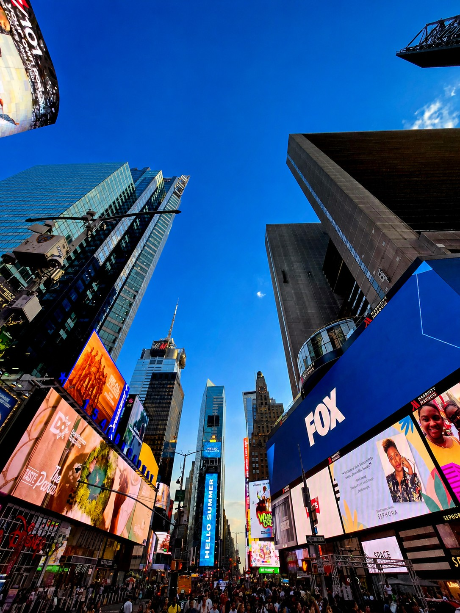
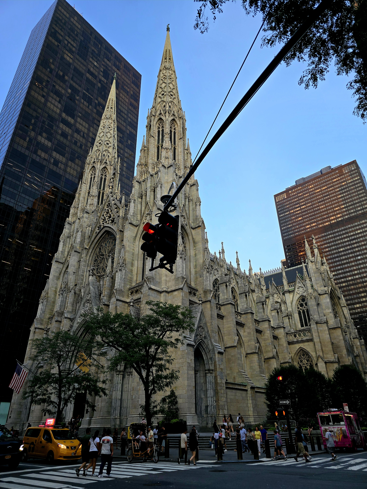
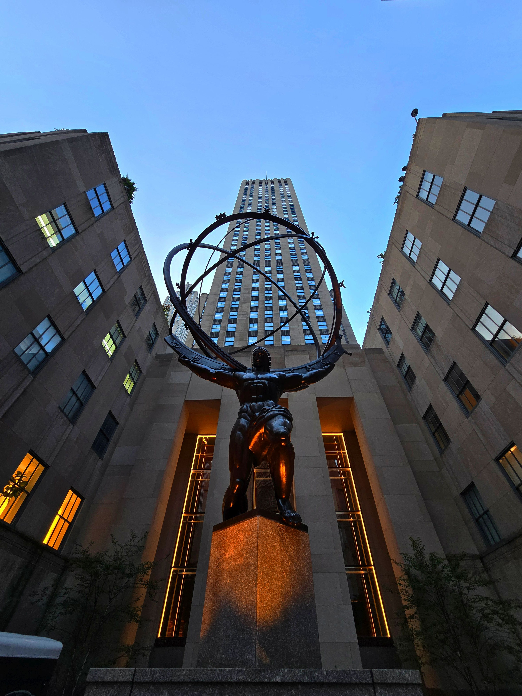
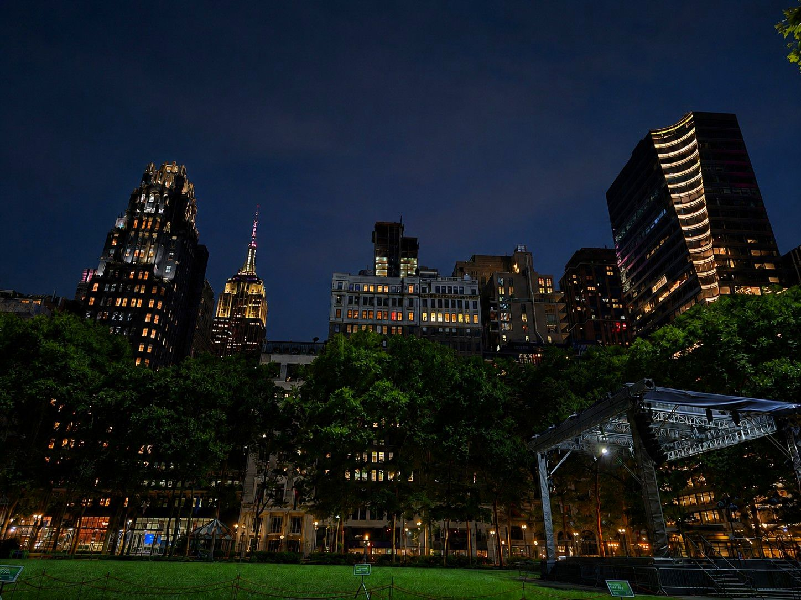
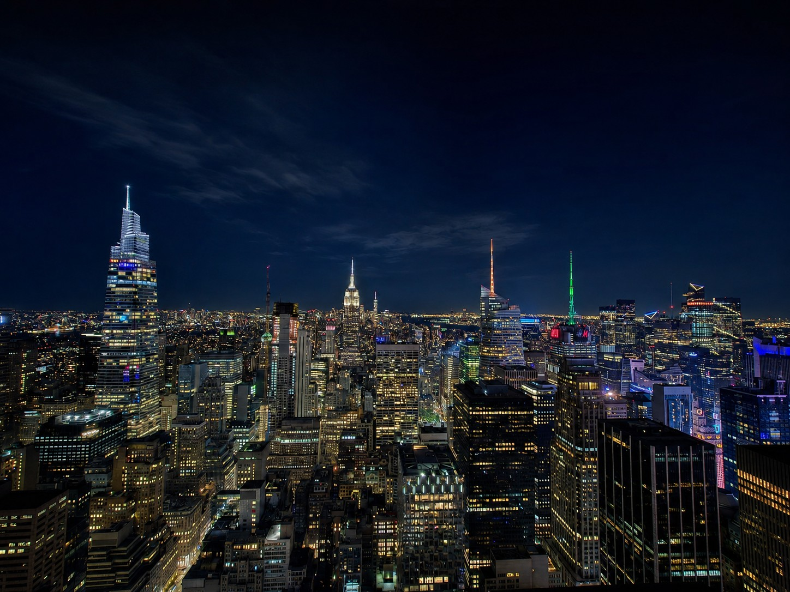
L'adrenalina batte la stanchezza: il primo impatto con la Vertical City.
Il viaggio inizia nel pomeriggio con l'atterraggio a Newark. Già dall'autostrada il profilo della città si staglia all'orizzonte, togliendo il fiato e dando il benvenuto ufficiale nella Grande Mela.
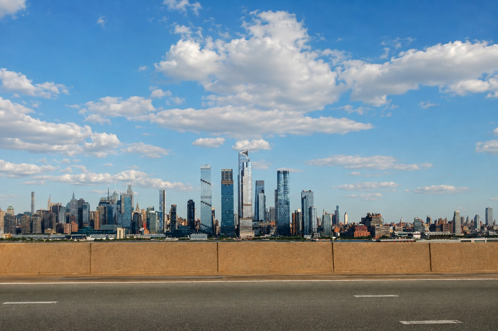
Giusto il tempo di lasciare i bagagli e ci si tuffa subito nel cuore pulsante della metropoli: Times Square. L'impatto con le luci e i cartelloni è stordente e magnifico.
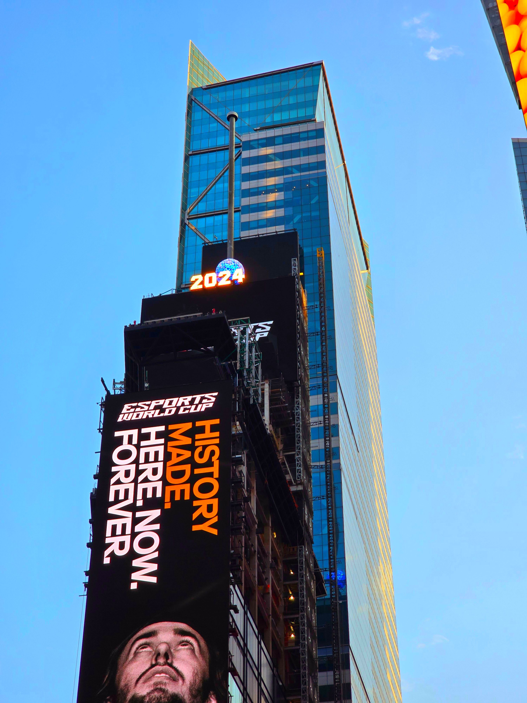
Ci spostiamo sulla Fifth Avenue per ammirare l'architettura gotica che contrasta con i grattacieli, per poi dirigerci verso uno dei complessi più famosi del mondo.
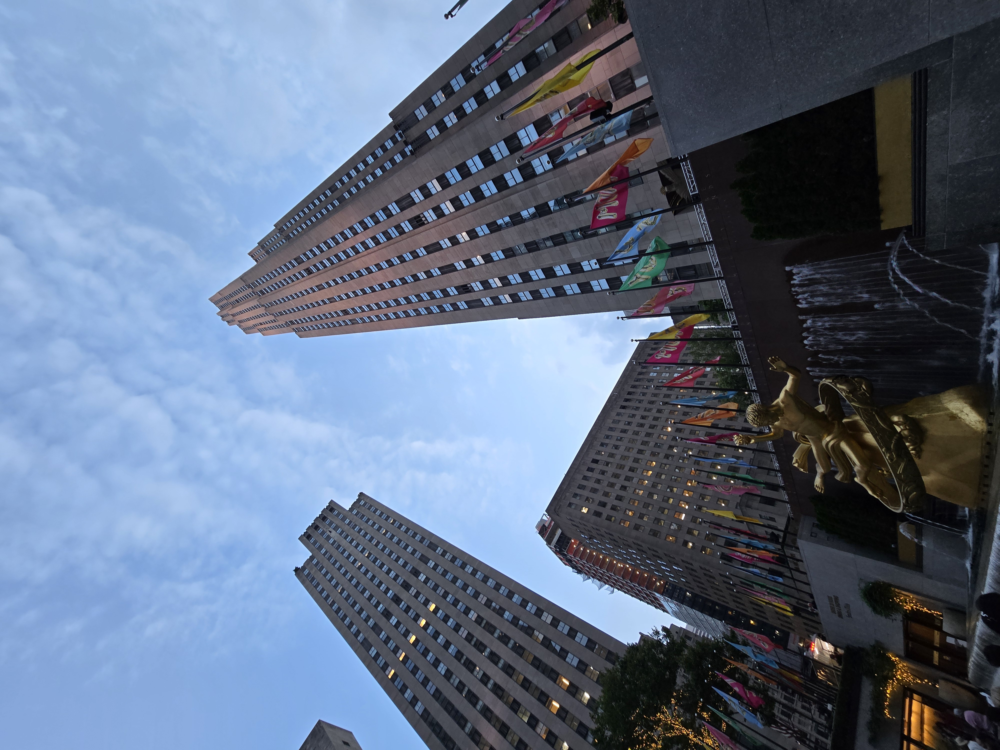
Concediamo una lunga e piacevole camminata lungo la Fifth Avenue fino a raggiungere Bryant Park, una meravigliosa oasi verde incastonata tra i palazzi, ordinata e accogliente.
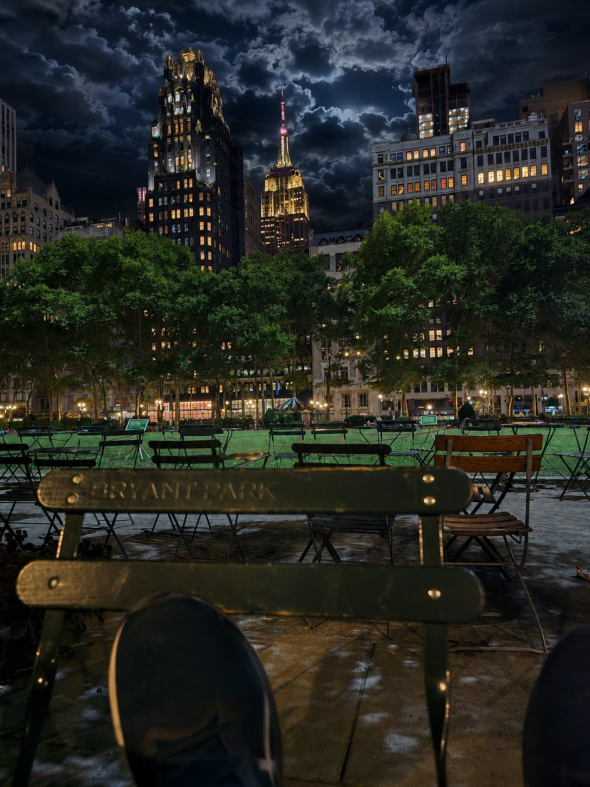
Nonostante il lungo volo e la sveglia all'alba, il cuore e l'eccitazione vincono sulla fatica. Torniamo a nord verso il Rockefeller Center per salire in cima all'osservatorio. New York dall'alto di notte è un tappeto infinito di luci che ripaga di ogni sforzo.
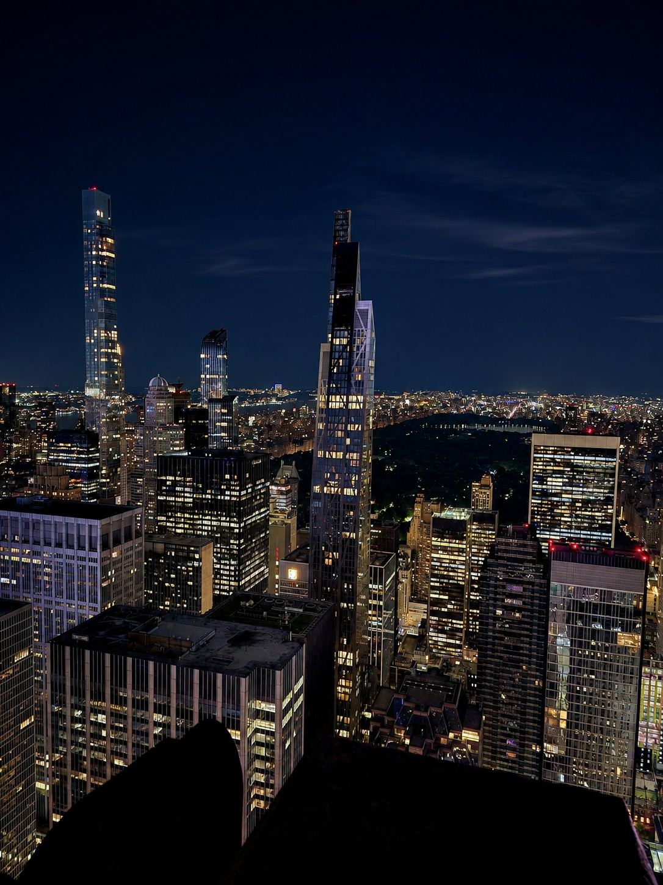
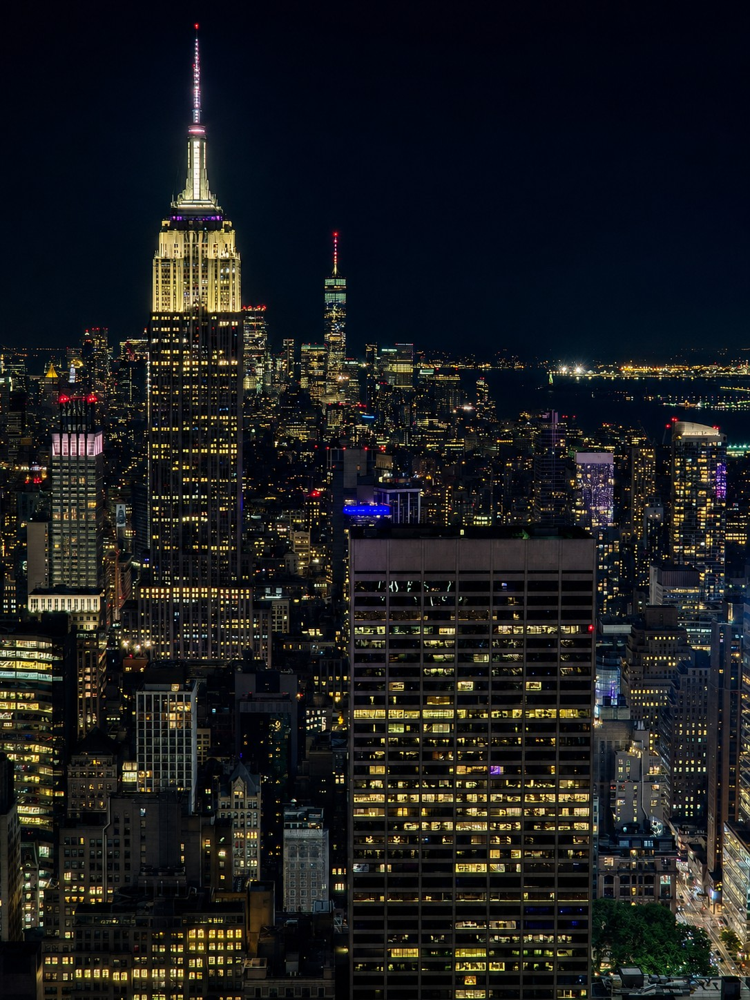
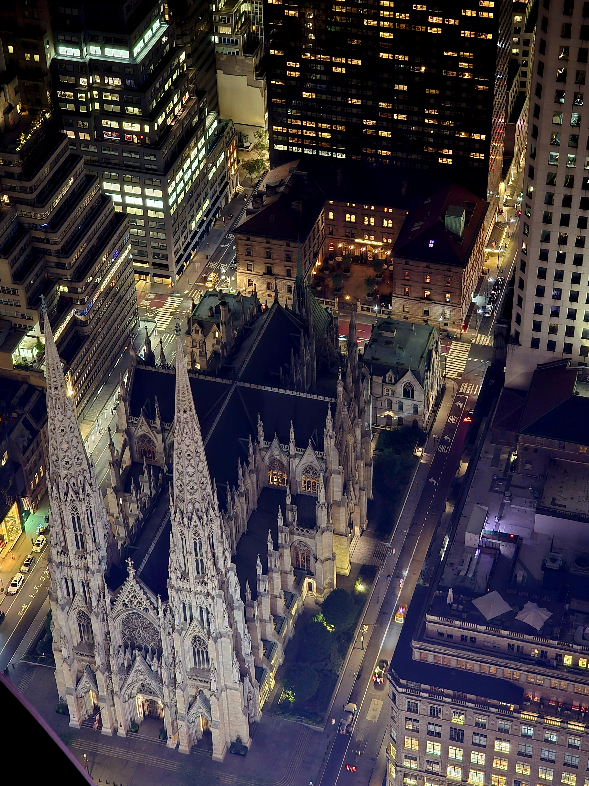